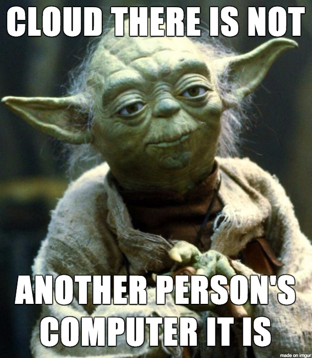
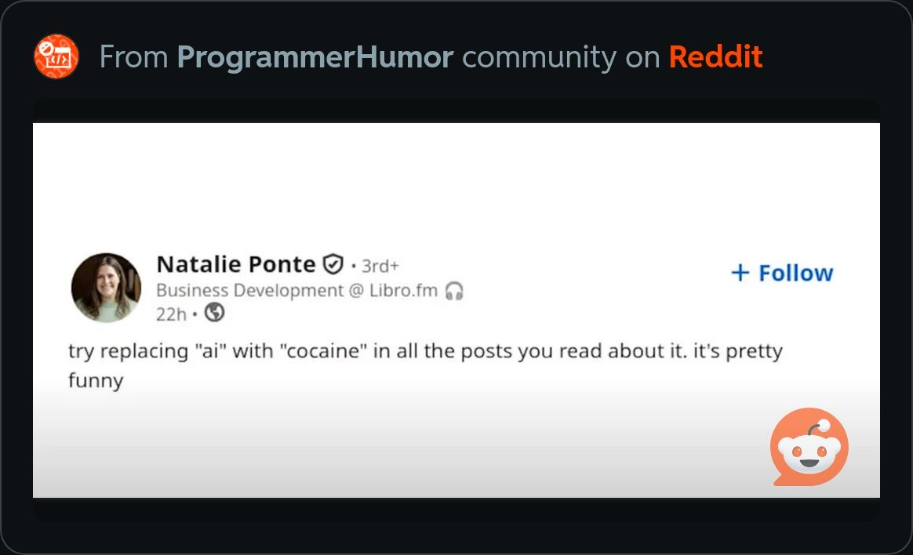
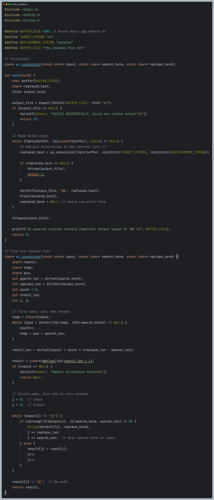

I am firmly of the opinion that, thanks to the rise of GPTs and LLMs, right now can be considered the second best time in history to learn to code—the first being the very next day after the dotcom bubble burst.
Though, unlike back then, the reason isn't due to a sudden mass realisation of the impact one can have on the world by publishing good software. No, today it's due to most people opting NOT to learn how to code because they are poised to simply ask AI to produce the software for them.
The LLM/GPT CEOs and hype-men are selling the promise that Agentic-AI can eventually produce software unicorns for their users from a single well-constructed prompt. Where are all the prompt-engineers today? This blunder of foresight into the future capabilities and use cases of a new technology is most wonderful for people who genuinely have a love for writing code; derive joy from doing so competently, and who want the things they build to stand the test of time.
Not unlike the compiler and the HTTP server; AI is nothing more than an amazing computer program that will permanently change the way the world does certain things, but that's genuinely all it is. A big reason why so many people exaggerate the impact AI will have on the world is due to the human tendency of giving computers agency whenever we program them to do things that only we could do before—the chatbot is our latest example of this digital pareidolia.
When the "adding machines" of the olden computing days were first revealed to the public, people exclaimed how "machines can now think and do things that were once the exclusive domain of man." And that sentiment was as ridiculous back then as it is today. Calculators don't think, and neither does AI. The use of terms such as training, reasoning, hallucinating, lying, and empathising has done more to confuse the public about AI than it has to help them understand it. The reason so many non-technical people have no idea they're storing their personal data on someone else's computer is because we call it the cloud. There is a non-zero percentage of people out there who truly believe their graduation photos of little Bobby Tables are safe and sound in the atmosphere.
AI seems so much more amazing than a traditional computer program that prints "Hello, world" to the console because we can't see what's in the black box. Every single computer program in the world takes an input, does something with it, and produces an output. AI works in the same exact way; the only difference is that we have no idea what it does with the input/tokens/the prompt before handing us back its output-token/the response.
Just because we can't see/understand a thing does not mean it carries a mystic power; this has been a very tough pill for humans to swallow throughout the course of history. The discovery of fire really fucked-up our caveman brains for a few years. But once we understood what fuels a fire, learned how to control it, and gained the ability to wield it safely; fire became the tool we used to pave our future and to more efficiently kill each other. The same can be said for the internet, and the same will be true for Artificially Intelligent, Generatively Pre-trained Large Language Models.
Vibe-coding Works Best When You Already Know the Vibes of Coding
When I first started learning to code, "prettier tools" and LSPs were just beginning their rise to prominence. Old heads would look down upon plebeians like me who wrote code by getting assistance from their IDE, as if using Emacs or Notepad++ was how one identified a good programmer. The field of Computer Science has always had a fraught relationship with abstraction; some believe it to be the devil while others see it to be god's gift to man and there is seemingly no state in-between. But that state is exactly where I find myself, much like Luffy that one time in Water 7.
From Grace Hopper's battle for the acceptance of compilers in the CS industry to the current crop of AI code generation tools today. Every time an era produces a technology that has lowered the barrier of entry into tech, the stalwarts of the industry have recoiled against it. I too was initially of that anti-AI camp until I started using it; saw its imperfections, identified its usefulness, and worked it into the vibes of my code.
Using AI to build things without actually knowing how to read and write proper code is equally as ignorant as hopping into a Cessna cockpit and engaging autopilot when you haven't a clue how to fly. You CAN do it, but it defeats the entire purpose of the technology and the outcome could potentially kill people.
Repeatedly tossing an error message back into the context window on an Agent will only take you so far, and the convoluted mess that results from brute forcing AI to write robust code is downright disgusting. Every single time I've asked any AI model to output an entire program for me, I've had to go in and make significant changes myself. This doesn't bother me too much. Unlike most programmers, I happen to actually enjoy reading code, especially if that code is C.
Turning AI into Cocaine AI Using The Lord's Language
I think leaders in the tech industry should start talking about AI the way medical professionals talk about cocaine. That is to say, the Anthropic CEO should shut the fuck up a little and just let programmers use it at their own discretion to ease the pains of binary surgery.
Every dental office and operating room in the world is filled with enough cocaine (liquid form) to knock out a herd of African Savannah Elephants. But you'll never hear a dentist publishing an industry memo evangelising the wonders of the white lady; or lamenting the impending doom of society due to coked-up patients running amok after discharge. Mostly because medical-grade cocaine is a controlled substance, but also because they know its power would be abused outside of professional practices.
I'm currently working through "The C Programming Language" aka White-book C by Kernighan and Ritchie. Among the initial exercises are a slew of text stream processing tasks. And while scrolling through the r/ProgrammerHumor Subreddit with those fresh in my brain, one post gave me a sudden inspiration to build the perfect find and replace tool for reading the smorgasbord of AI articles being pumped out on a daily basis these days. Yes, that includes this one 🤦🏾♂️
"AI to Cocaine" is a C program that iterates over every character in a text stream from stdin, and looks for every occurrence of the string "AI" to replace it with "cocaine." Admittedly, initially I just thought this would be funny, and to my credit it IS indeed hilarious. But as I was building and repeatedly testing it on different articles, I came to the realisation that it could serve as a practical and sobering tool.
The outputs of this program read as ridiculous as any purposefully leaked memo put out there in order to aura-farm AI and coax money out of investors' pockets. So when reading and considering your future within this latest tech bubble, remember the reason why Pets.com failed but Amazon is a billion-dollar titan of industry. Hint: one company was riding a wave, while the other used the emergent technology to make waves of their own.
The Magic Behind Cocaine
As I'm currently on a journey to become the best C developer I could be, to then use that knowledge as a base to become the best Swift developer I could be, I welcome the inspiration to build fun little CLI programs like this. I tried to make the code as memory safe, efficient, readable, and maintainable as possible. Obviously, that's somewhat easy and meaningless for ~90 lines of ANSI-C, but a wise man once said, "the way you do one thing is the way you do everything." Which is simply to say if you write shitty code in your weekend projects, you're gonna write shitty code and push it to production—no matter what day of the week it is.
My code begins with some macros to define the heavy lifting variables of the program. There's only one function besides main, but it's a fairly chunky boi considering the size of the codebase it's sitting in. I very well could've just put all this code into main to run the program raw, but "ai_cocainizer" is the coolest fucking name ever given to a helper function, and I simply could not resist.
As someone who truly loves for-loops, and believes almost every while loop should be converted to such, sometimes it just honestly feels unnecessary. The for-loops I would've had to write to mimic the whiles here just looked ugly and out of place to me. And the logic of the loops themselves is just easier to follow as a while-loop.
// First pass: - REFACTORED TO FOR LOOP
for (temp = (char*)input; (pos = strstr(temp, search_term)) != NULL; temp = pos + search_len) {
count++; // Count each occurrence found
}
And The Money Shot:
// Second pass: - REFACTORED TO FOR LOOP
for (int i = 0, j = 0; input[i] != '\0'; ) {
if (strncmp(&input[i], search_term, search_len) == 0) {
// Found a match - copy the replacement string
strcpy(&result[j], replace_term);
j += replace_len; // Move output pointer past replacement
i += search_len; // Skip search term in input
} else {
// No match - copy single character
result[j] = input[i];
i++;
j++;
}
}
In Summation
Although there is nothing particularly amazing about the code behind this silly program that I wrote, I had a lot of fun doing so and it inspired me to write this article. As a reminder to me and software engineers who care to savour the process of writing code and seeing the magic it brings.
If your goal is simply to put programs out there that can make quick bucks, then by all means do you and vibe code till the inference comes home. But if you truly love the science of computers, and enjoy making your fingers dance across a keyboard to write glyphs that make CPUs do magic; then have fun with this new technology and use it to accelerate your learning. And if you really are passionate about software/technology, then you'll already know exactly how to do that!
Happy coding, and safe vibing ✌🏾🚀